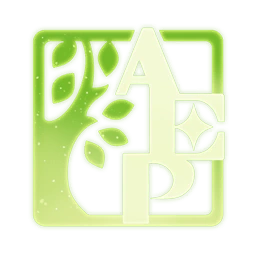

AR · Adventure RankAR · Rango de Aventura
It's your account level, not your characters' level. It goes up with Adventure EXP, which you get from almost everything: quests, daily commissions, opening chests, unlocking teleport waypoints, completing the Adventurer Handbook and spending resin (each point of Original Resin gives you 5 Adventure EXP). Es el nivel de tu cuenta, no de tus personajes. Sube con EXP de aventura, que consigues con casi todo: misiones, comisiones diarias, abrir cofres, activar teletransportadores, completar el Manual del aventurero y gastar resina (cada punto de Resina original te da 5 de EXP de aventura).
At some ranks (25, 35, 45 and 50) your AR gets “stuck” until you complete an ascension quest. It's not a bug: look for it in your quest list. En algunos rangos (25, 35, 45 y 50) el AR se «atora» hasta que completas una misión de ascenso. No es un error del juego: búscala en tu lista de misiones.
- AR 16 Co-op mode.Modo cooperativo.
- AR 20 Spiral Abyss and World Level 1.Abismo de la Espiral y nivel del mundo 1.
- AR 24 Encounter Points for commissions.Puntos de encuentro para las comisiones.
- AR 35 Serenitea Pot (it also requires story progress).Tetera de Serenidad (también pide avanzar en la historia).
- AR 45 Max-level artifact domains.Dominios de artefactos de nivel máximo.
...you skipped the main story. Many features (and entire regions) unlock through Archon Quests, not just AR. te saltaste la historia principal. Muchas funciones (y regiones enteras) se desbloquean con misiones del Arconte, no solo con AR.
Don't rush your AR: higher AR means stronger enemies. Level up at your characters' pace and you'll be fine. No corras para subir de AR: más AR significa enemigos más fuertes. Sube al ritmo de tus personajes y vas a estar bien.